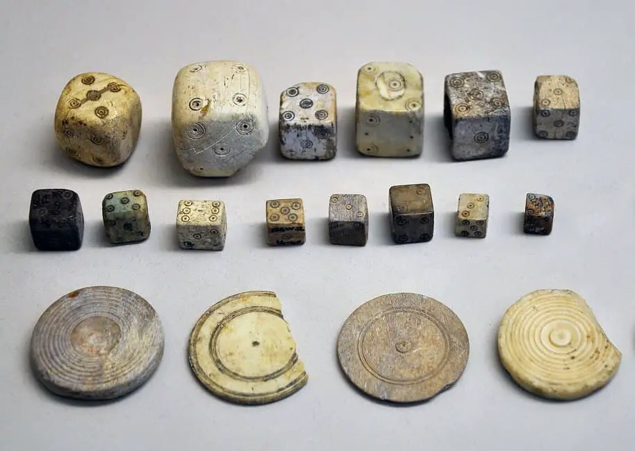

History of Board Games
The first evidence of board games dates back over 7,000 years in pre-historic times before humans had even developed written language!In a burial grounds called Başur Höyük located in the South East of Turkey, Archaeologists discovered carved and painted stones. These stones represent the first iteration of a piece we all use in board games even to this day – DICE!Dice style games have been discovered in Archaeological sites all along what is known as the Fertile Crescent which spans over modern-day Iraq, Israel, Palestine, Syria, Lebanon, and southeast Turkey.Each region appeared to have their own take on the dice – from painted sticks to carved wood, bone, sheep knucklebones, and shells.It is unkown which type of games were played with these dice, however carbon dating suggests they were developed around 5000BC.